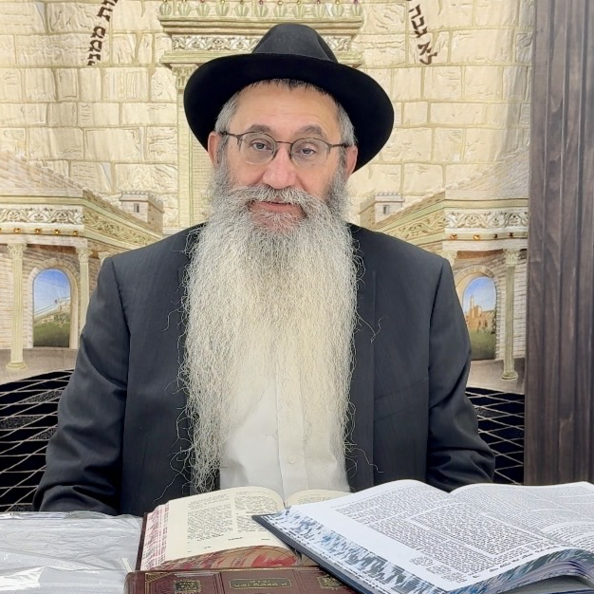

שיעורי חסידות על פרשת השבוע | הרב תמיר קסטיאל
בית חב״ד קטמון
שיעורי תורה וחסידות על פרשת השבוע והמועדים עם הרב תמיר שיחי׳ קסטיאל מבית חב״ד קטמון. השיעורים מבוססים על תורת החסידות ועל תורתו של הרבי מליובאוויטש, ומביאים רעיונות עמוקים מהפרשה לחיזוק האמונה ולחיי היום־יום